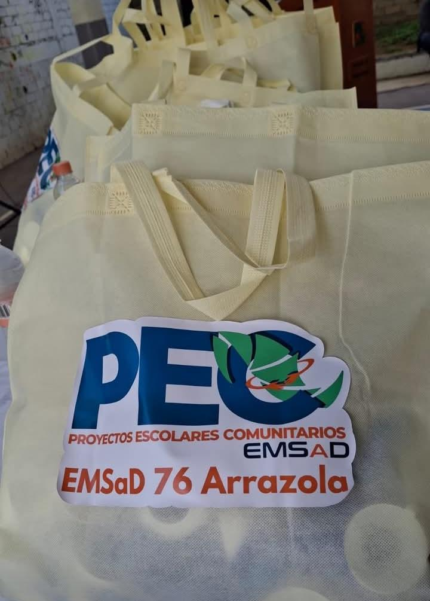
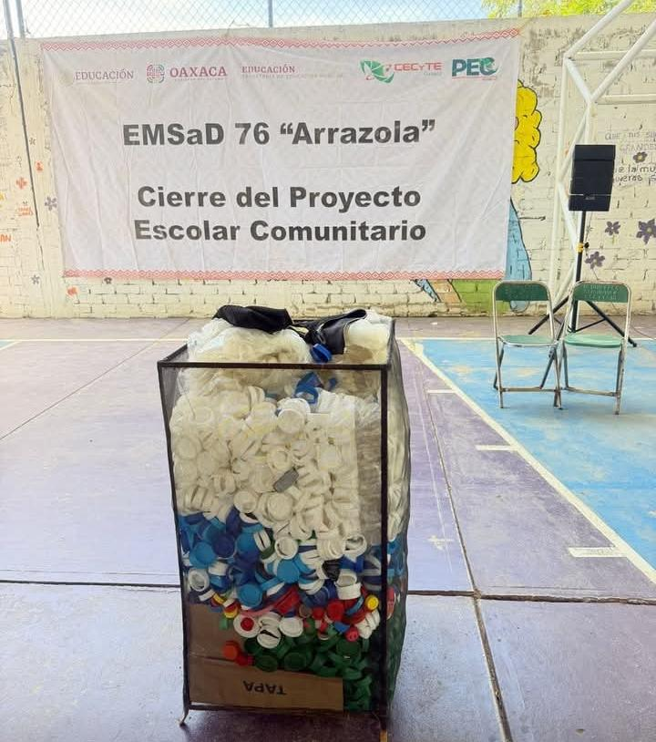
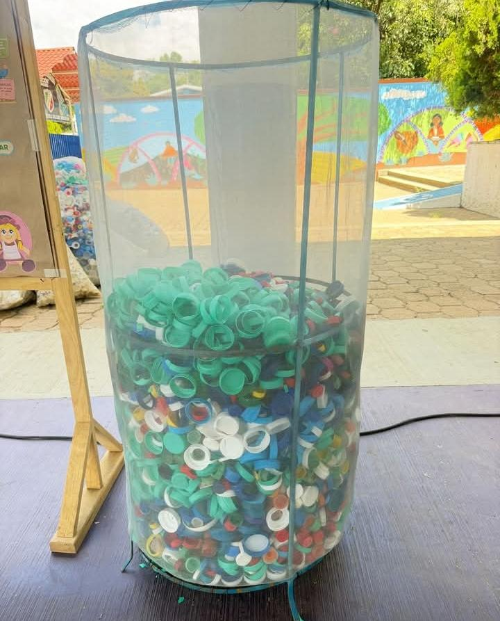
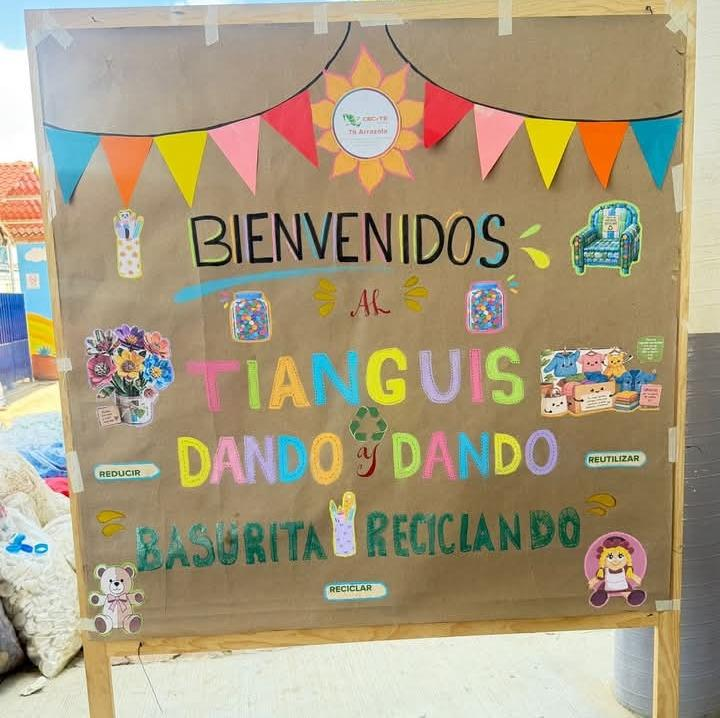

COLEGIO DE ESTUDIOS CIENTIFICOS Y TECNOLOGICOS DEL ESTADO DE OAXACA
Alumnos del CECyTE EMSaD 76 de Arrazola pusieron en marcha el proyecto “Eco reciclando”, con el fin de recolectar tapitas de plástico para apoyar a niños con cáncer. Colocaron botes en cada seccion del proyecto y la escuela para que donen sus tapitas de refresco, agua o leche. Al reciclarlas, el dinero obtenido ayuda a cubrir tratamientos y quimioterapias, mientras cuidan el medio ambiente.
ECO-Recicla: Arte Sustentable




Darle una segunda oportunidad a las coasas recicladas